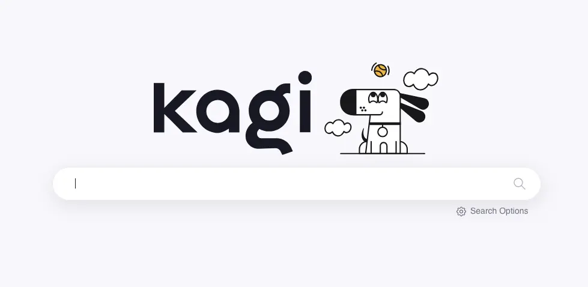
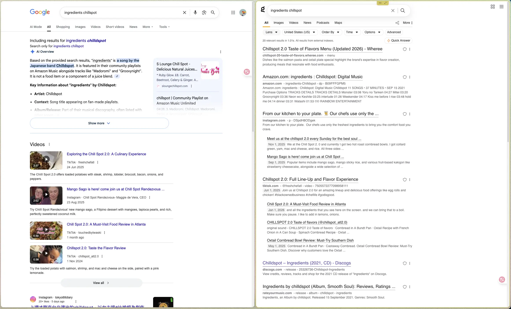
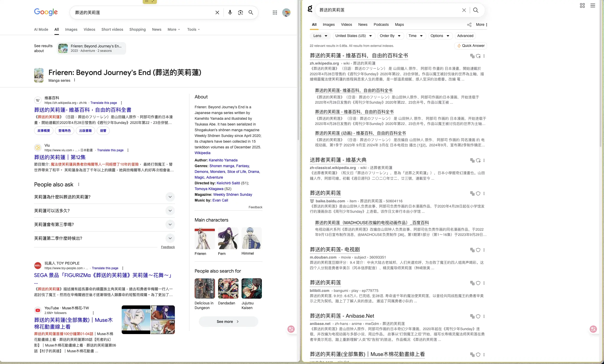
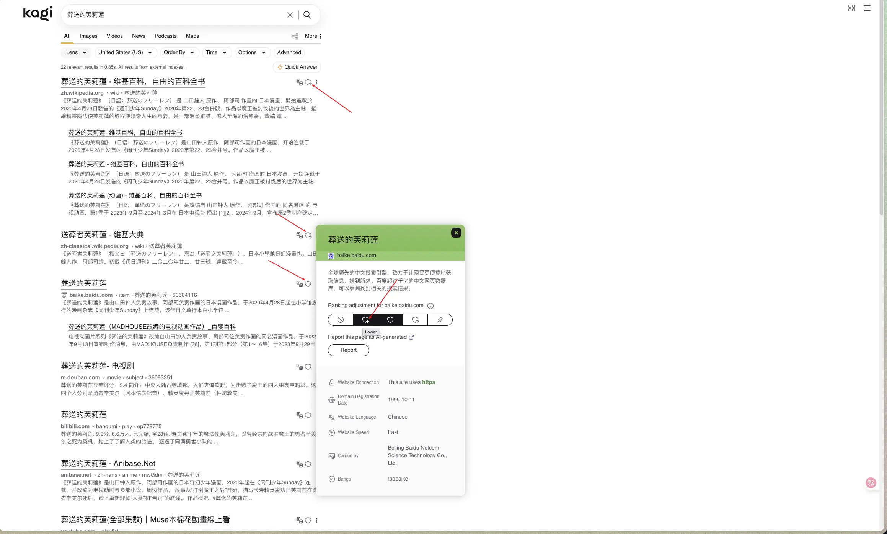

也许你想试试 Kagi？
{kind=link}

Kagi 是一个付费的搜索服务，提供网络搜索和 LLM 相关的服务。
和 Google 不同的是，它需要 付费订阅，它的收入不依赖广告，因此它也不需要追踪你，所以 Kagi 的搜索结果中是没有广告的，也更尊重隐私。
Kagi 我用了很长一段时间了，最近切换到了 Professional Plan ($10/mo)，彻底拥抱 Kagi 作为我的搜索引擎。价格不算便宜，但我觉得还算物有所值。
可以对比一下 Google 和 Kagi 搜索结果：
{kind=link}

{kind=link}

说实话，从搜索结果来说，差异不是特别大，Google 结果其实也还不错，我都能在第一页找到我想要的结果。
但是在 Kagi 里，我还可以 个性化搜索结果，对不喜欢的结果降级，从而减少甚至禁止相关结果出现，久而久之，搜索的结果会更符合我的预期。
{kind=link}

搜索功能之外，Kagi 还提供了很多功能：
- SlopStop 减少 AI 结果
- Lenses 限制结果在某个领域
- Kagi Assistant LLM 对话页面，支持网络搜索，注重隐私
- Kagi Translate 比 Google Translate 好的多的翻译服务，可以翻译文档、网页
- Kagi Summarizer 一个总结页面内容的服务，我很少用。
Summarizer 和 Assistant 都可以在搜索结果旁边直接调用。
Kagi 还提供了 API 和 插件，可以进一步按照自己需要进行集成，例如我把 Kagi 集成到了 Emacs 里（Emacs: 封装 webjump 搜索 symbol-at-point），可以快速地从 Emacs 获取内容跳转到 Kagi 相关服务搜索。
Kagi 的订阅计划分了 4 档：
- Trial
- 限制 100 次搜索
- Stater ($5/mo)
- 限制 300 次搜索，有 $5 的标准模型调用额度
- Professional ($10/mo)
- 不限制搜索次数，有 $10 的标准模型调用额度
- Ultimate ($25/mo)
- 不限制搜索次数，有 $25 的模型调用额度，开放高级模型，开放 Research 模式
我是从 Trial 开始试用的，但 100 次很快就用完了，后面升级到 Starter，也有 300 次搜索限制，总是会在搜索的时候纠结要不要用 Kagi，后来发现我使用的次数远多于 300 条，就升级到了 Professional，终于可以没有顾虑地用。
从 Starter 计划开始，就有模型调用额度，可以使用 Kagi Assistant，是一个 LLM 对话页面，支持网络搜索，标准模型里还有最近发布的 Kimi 2.5，对我来说已经够用了。
我也尝试过 Ultimate Plan，多了高级模型和 Research 功能。
高级模型对我没太多吸引力，Kimi 2.5、Gemini Flash 3.0 就已经足够回答我大多数问题了，更关键的是其中的网络搜索能力，能够获取最新的、高质量的内容，一般来说回答的质量也会更好一些。
Research 是 Kagi Assistant 中的一部分，给它一个要求，它会进行计划，思考更长的时间 (>30s)，最后输出一份详细的报告，比默认模式的数据更丰富一些。但是 Research 对我来说好像不太需要，结果也不是特别惊艳，我有点难说服自己每个月为此多付出 $15。
我用 Quick Mode (Kagi Assistant 默认的模式) 和 Research Mode 问了一个相同的问题，结果可以对比一下：
如果你打算用 Kagi，而且每个月的使用很容易达到 300 次搜索限制，我觉得 Professional 应该是比较好的选择。如果能找到认识的人，一起拼车 Family 计划还能再省一点（更多可以看 Plan Types）。
如果搜索对你来说是比较高频的事情，而且你也比较在意搜索质量和隐私，希望减少广告等干扰，不妨试试 Kagi，或许你也会喜欢它。